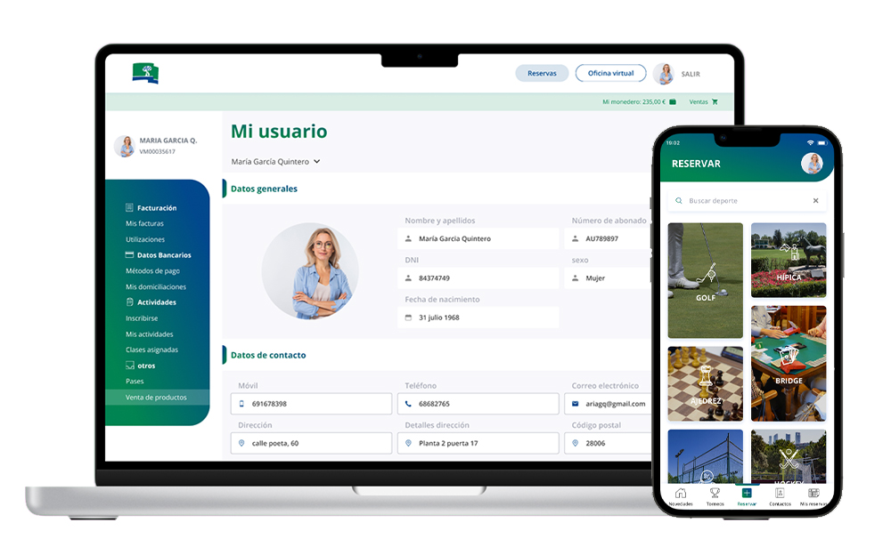
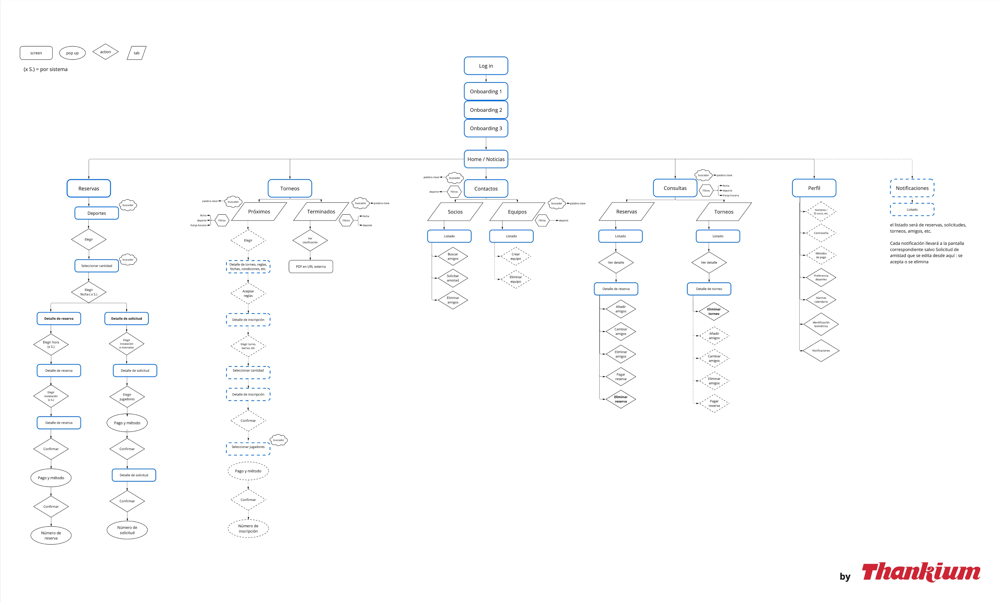
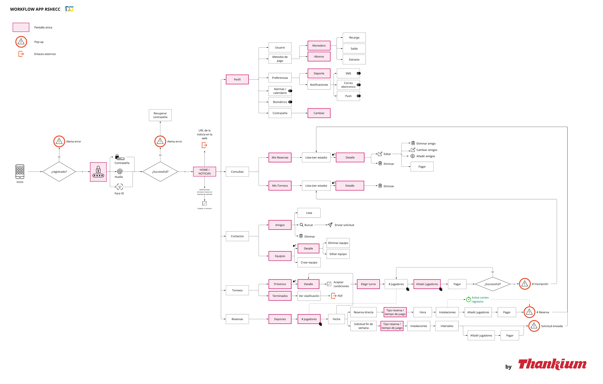
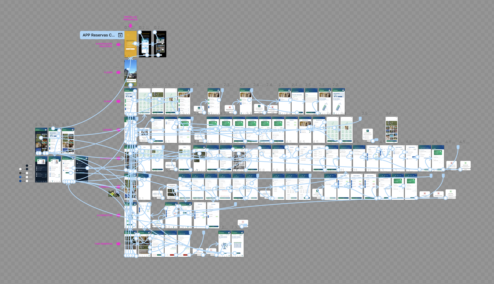
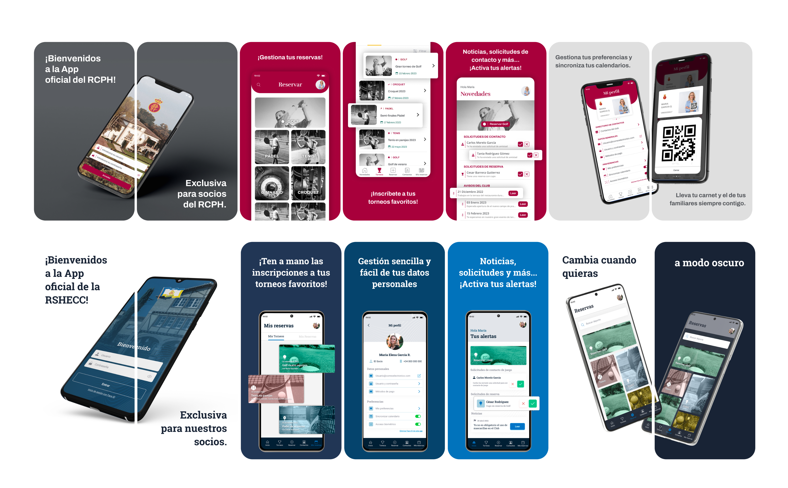

01 — Challenge
The Challenge
Four sports clubs each had unique requirements, yet all relied on the same outdated software. A significant percentage of their members — including older adults and non-digital users — were not using the platform. The clubs needed a modern, unified digital experience without losing club-specific identity.

The project required building a hybrid iOS/Android app plus an integrated web Virtual Office — all designed for users who had never engaged with a digital platform before.
02 — Requirements
Key Project Requirements

- Hybrid app (iOS & Android) + integrated Virtual Office web platform
- Dynamic booking system for facilities, classes, and events
- Digital wallet with QR code access control
- Tournament management and push notifications
- Custom UI kit per club maintaining shared system
- Designed for non-digital users — accessibility first
03 — Process
My UX Process
Discovery Workshops
3-day workshops with each club's stakeholders, members, and staff to map needs, pain points, and workflows.
User Journey Mapping
Mapped end-to-end journeys for 4 distinct user types: members, admin staff, coaches, and club managers.
Information Architecture
Designed a shared app structure that could be customised per club without duplicating dev effort.
Design System Creation
Built a scalable UI kit with club-specific theming — colors, logos, and icons — while sharing components.
Prototyping & Testing
Tested with actual club members including seniors, iterating on onboarding, booking flows, and wallet UX.
Handoff & Launch Support
Full dev handoff with annotated Figma specs, component library, and ongoing launch consulting.


04 — Results
Results and Deliverables
- +70% increase in app retention and active daily usage
- Hybrid app deployed across 4 clubs with custom theming
- Virtual Office web platform successfully integrated
- Digital wallet + QR access adopted by majority of members
- Non-digital users onboarded successfully via simplified flows
